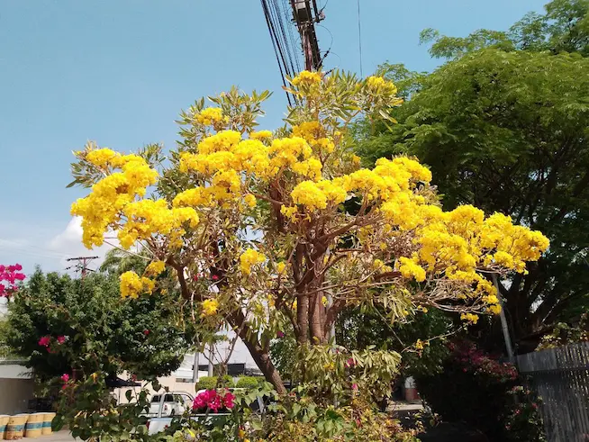

Luis Montenegro
About Me
My name is Luis Montenegro, a Venezuelan currently residing in Spain. I love video games and fantasy stories. I am passionate about programming and I dream of one day creating my own video game. I strive every day to achieve my goals and improve myself.
Venezuela
 A beautiful country with hundreds of wonders, but sadly trapped in a dictatorship that seems to have no end. Even so, everyone has high hopes for the future, wishing for a better tomorrow and striving, at least individually, to move forward despite adversity.